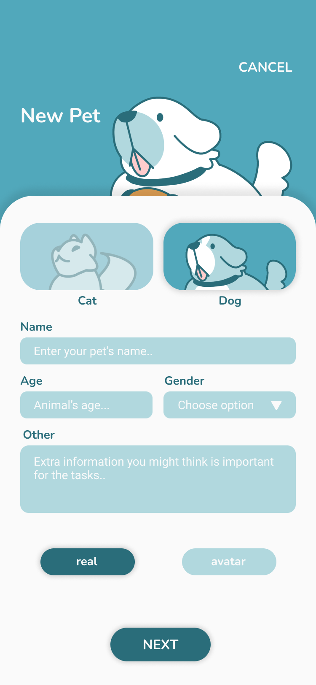
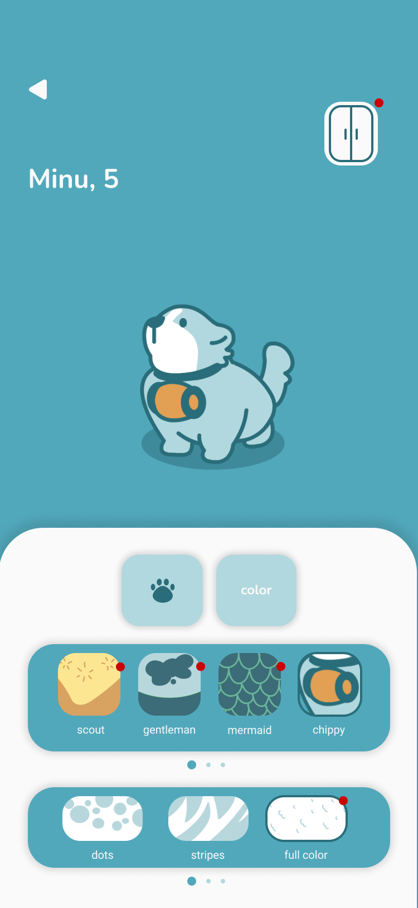
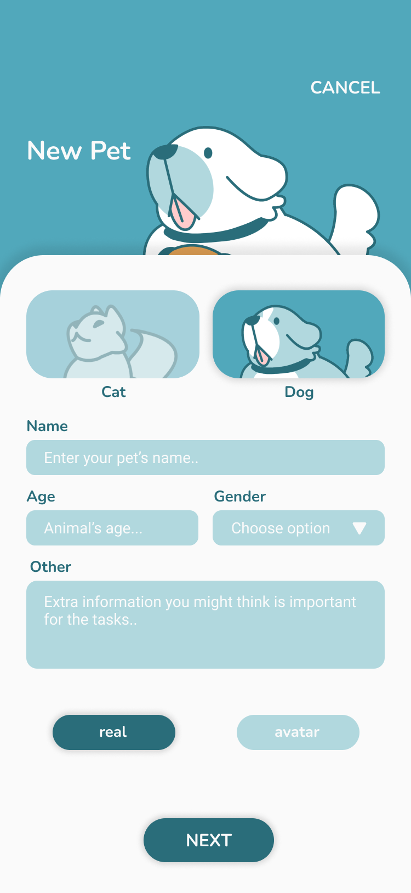
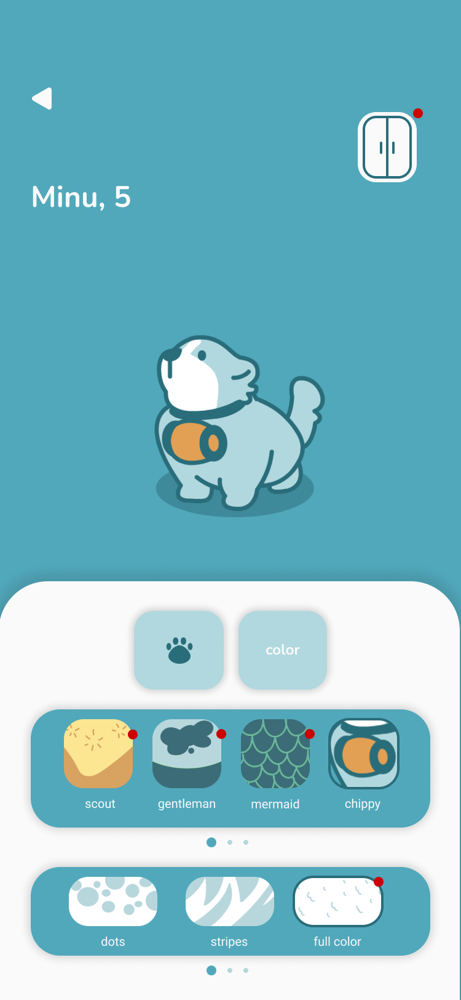

Context
Bloopy is a mobile app designed to centralize pet care services such as walking, grooming and veterinary visits. Users can manage multiple pets, track service history and communicate with caregivers in one place.
UX / UI · Mobile App · 2023
Bloopy is a mobile app designed to centralize pet care services such as walking, grooming and veterinary visits. Users can manage multiple pets, track service history and communicate with caregivers in one place.
Design a user-friendly platform that simplifies pet care management and increases retention through a reward-based virtual currency system (Snowflakes).
Main approach: User research → user flows → wireframing → UI design → prototyping → iteration.
High-level overview of the booking flow and core screens, focused on reducing friction and improving task completion.
 


